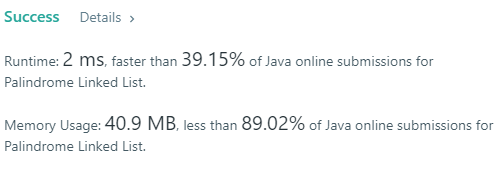

leetcode234
Given a singly linked list, determine if it is a palindrome.
Example 1:
Input: 1->2
Output: false
Example 2:
Input: 1->2->2->1
Output: true
Solution by myself
Approach 1
1
2
3
4
5
6
7
8
9
10
11
12
13
14
15
16
17
18
19
20
21
22
23
24
25
26
27
28
29
30
31
32
| class Solution {
public boolean isPalindrome(ListNode head) {
Stack<ListNode> stack = new Stack<>();
ListNode dummy = new ListNode(-1);
dummy.next=head;
ListNode n =head;
int count=0;
while(n!=null){
count++;
n=n.next;}
int c1=0;
if(count==1)
return true;
n=dummy;
while(c1!=count/2){
n=n.next;
stack.push(n);
c1++;
}
if(count%2==1)
n=n.next.next;
else n=n.next;
while(n!=null){
ListNode n2=stack.pop();
if(n2.val!=n.val)
return false;
n=n.next;
}
return stack.isEmpty();
}
}
|

Approach 2 use array to store val in listnode, it can reduce memory use and runtime